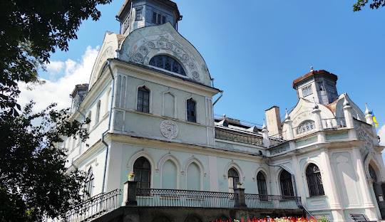
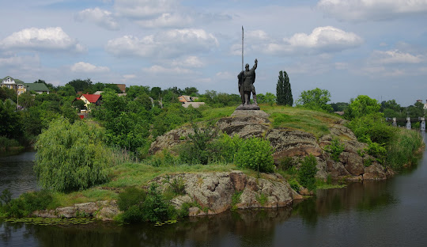
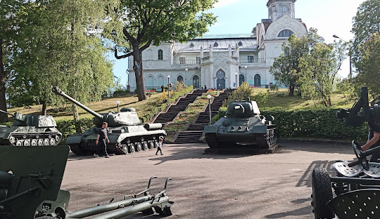
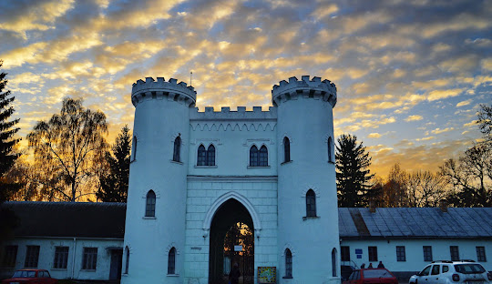
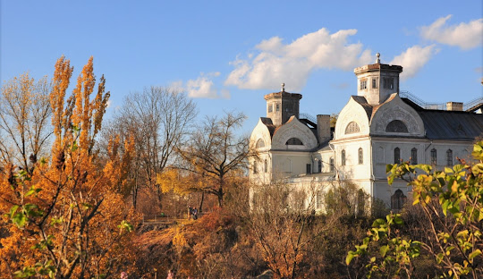

Центр
Корсунь-Шевченківської
міської громади. Розташоване обабіч річки Росі за 70 км на захід
від
Черкас. Має залізничну станцію Корсунь. Місто перетинає
автотраса Київ
Дніпро. З Києва до Корсуня-Шевченківського ходять автобуси з автостанції «Видубичі», а з Черкас — з центрального автовокзалу. Населення становить 20589 осіб (2022). Корсунь — одне з найдавніших міст України.
Більше інформації тут!!!    Назва міста походить від назви річки Корсунка.
Це
тюркська назва «кара су» (чорна вода, у значенні «чиста
вода»).
Також є версія, що назва може походити від імені руського бога
сонячного світла — Хорса. Ймовірно, первісна назва звучала як
Хорсунь, що з часом змінилася в результаті лінгвістичних
трансформацій.

У 1032 році князь Ярослав Мудрий заснував місто-фортецю Корсунь для захисту південних кордонів Київської Русі від набігів тюркських кочівників, використавши Рось як природну перешкоду. Воно входило до Пороської оборонної лінії, до якої відносилися також міста, що стояли на Росі
Автомобіль №1
- Volkswagen Tiguan
- Ціна 41000$
- 150 к.с
- Обєм двигуна 2.0л